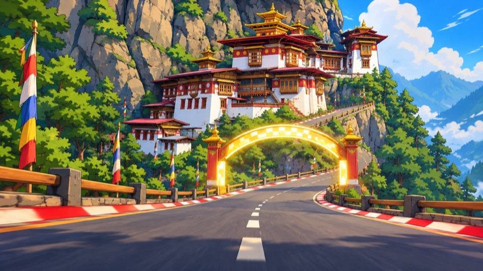
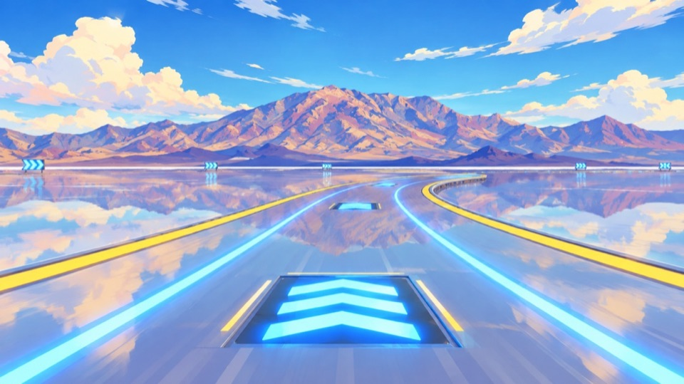
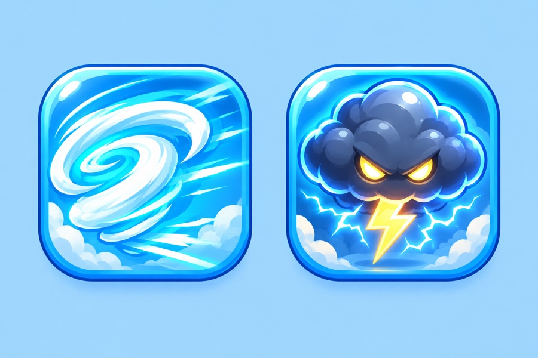
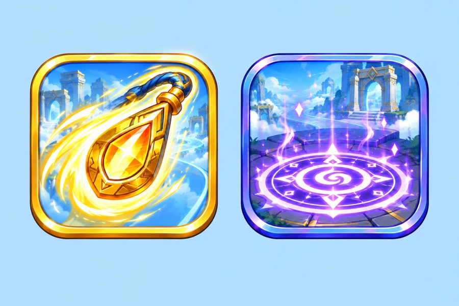
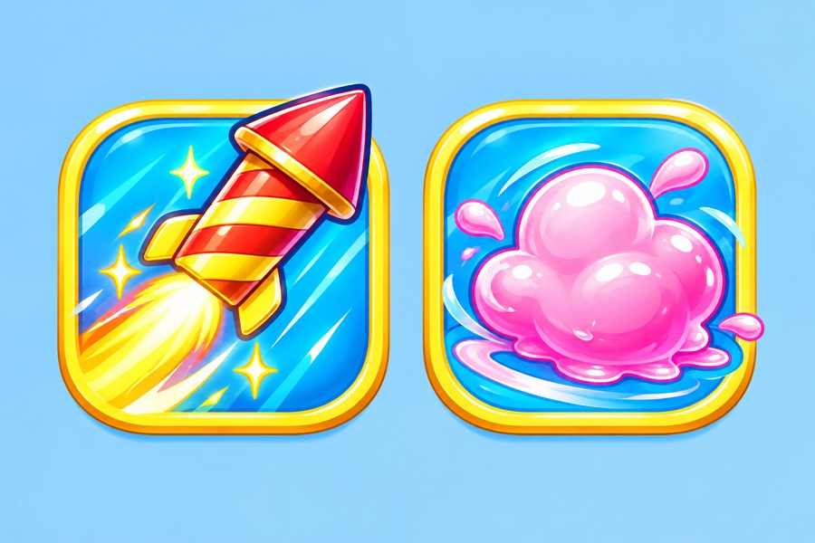
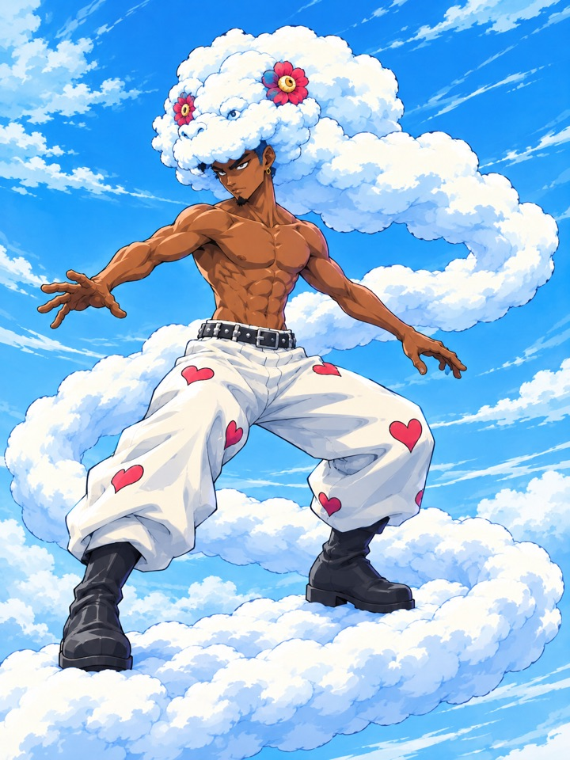
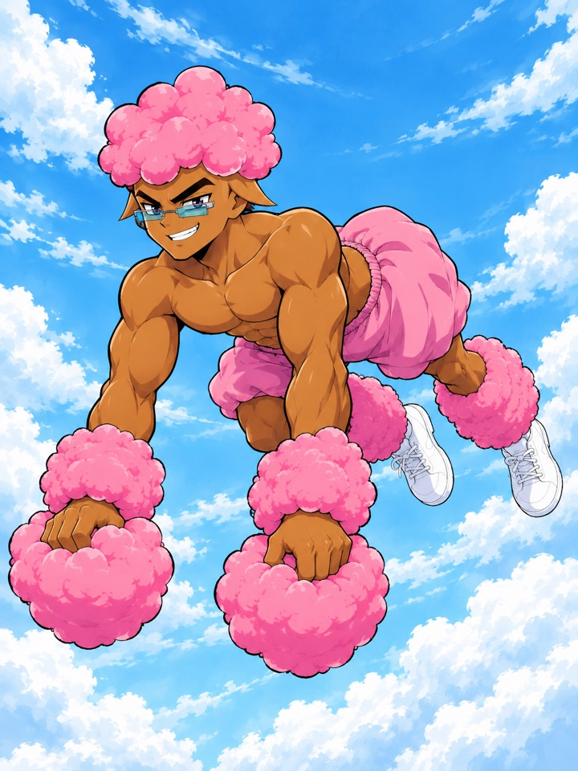
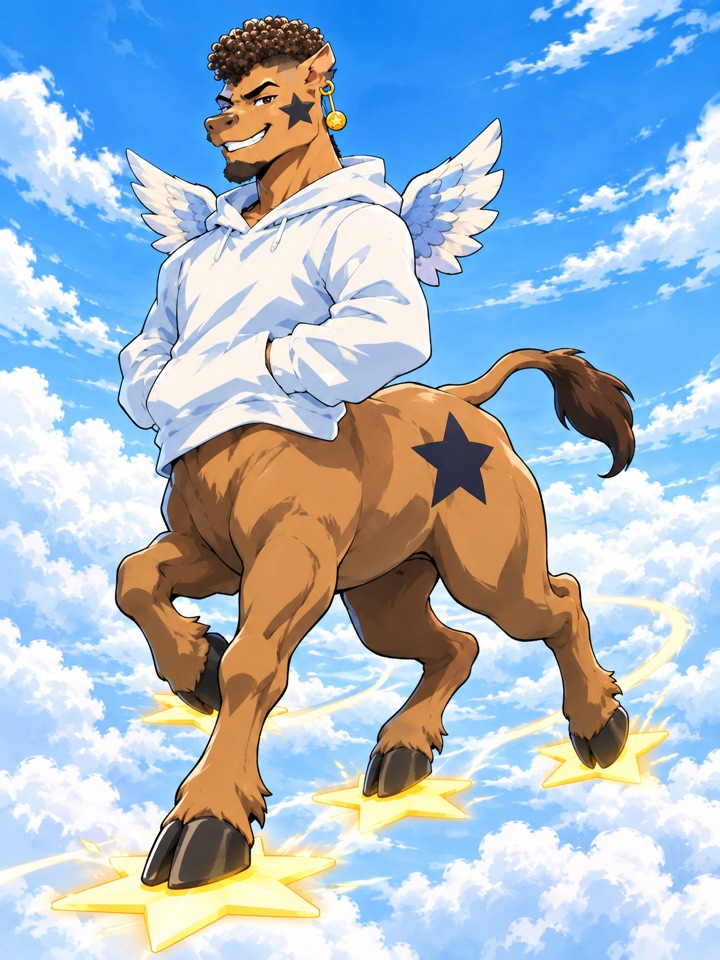

DECISIONS TO TALK ABOUT
Creative calls for Innocent and Quincy. Updated November 3, 2026 (evening).
← Back to the 3D gallerySETTLED
- A multiplayer sky-racing game, online, tested locally first. Computer racers fill empty spots later.
- No cars: every racer rides in their own way. Camera behind the racer.
- Real rock, paper, scissors on a timer. The winner chooses a power-up: speed or a trap.
- The look: bright and glossy.
- The stages: Cliff Temple and Mirror Flat.
- First game: the four racers (Cloud Dragon, Spiral, Pink Puff, Centaur Bull). The other suggested racers come after.


1. THE POWER-UPS
Win rock, paper, scissors and you choose a power-up: go faster yourself, or drop a trap that trips whoever is behind you. Kart games usually have four kinds (speed, traps, things you throw, shields); we start with two.
Pick a set, mix and match, or rename them. Left is the speed boost, right is the trap.



- Should each racer get their own look for the same two power-ups (Cloud Dragon's speed is a gust, Spiral's is a thruster burst)?
- Later we can add a third kind: something you throw, or a shield.
TALK ABOUT: Which set (or mix), and do the racers get their own versions?
2. SOUND
Nothing has been made for sound yet. Some questions to start with:
- What does each track sound like (mood, instruments)?
- What does each racer's ride sound like (cloud whoosh, pod hum, puff pops, hoof thuds)?
- Do racers shout their move? An announcer for "Ready… go!" and "Final lap"?
TALK ABOUT: The feel of the music and two or three must-have sounds.
3. NEXT RACERS FOR 3D
Approved for 3D. Cloud Dragon goes first, then Pink Puff and Centaur Bull. The other suggested racers (Rocket-Skate, Spirit-Beast, Cloud Rider, Wind-Ball) come after the first four.



TALK ABOUT: Anything to tweak before each one is built?